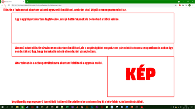
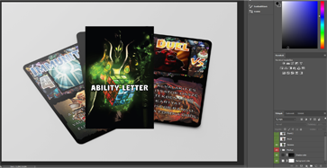
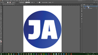

Terv
A tervezésben az okozta legtöbb gondod hogy nem tudtam minden úgy megcsinálni ahogy szerettem volna. Például azt akartam megcsinálni, hogy a képeket külön jó minőségben meg lehessen nyitni, de végül elvettetem az ötletet.
Első tervek

Először a faviconnak akartam valami egyszerűt beállítani, ami rám utal. Végül a monogramom lett az.
Utána pedig egy egyszerű ismétlődő hátteret illesztettem be ami nem lóg ki a kék-fehér szín kombinációból.
Egy nagy képet akartam legtetejére, ami jó háttérképnek de beleolvad a többi színbe.
A menü sávot először vízszintesen akartam beállítani, de a segítségként megnéztem pár mintát a teams csoportban és sokan így rendezték el. Úgy, hogy én inkább másik elrendezést választottam.
A tartalmat és a képeket váltakozva akartam feltölteni egymás mellé.
A felhasznált forrásokat peddig a lábjegyzetben helyeztem el.

Szövegháttér
A szövegeknek készítettem egy hátteret, ami több különböző kék színnek az elmosásával hoztam létre. A legsötétebb (kezdő) kék színkódja megegyezik a menü hátuljának a színével.

Kártyák
A kártyákról digitálisan helyeztem el egy mockup sablonon, hogy egy jó minőségű látványterv képeként jelenjen meg.
Favicon
A favicont én készítettem photoshop és illusztrátorral. Először egy kört rajzoltam illusztrátorral majd a már említett szöveg hátteret a kör alá maskoltam. Ezt utána photoshopban igazítottam méretre és mentettem el png be.